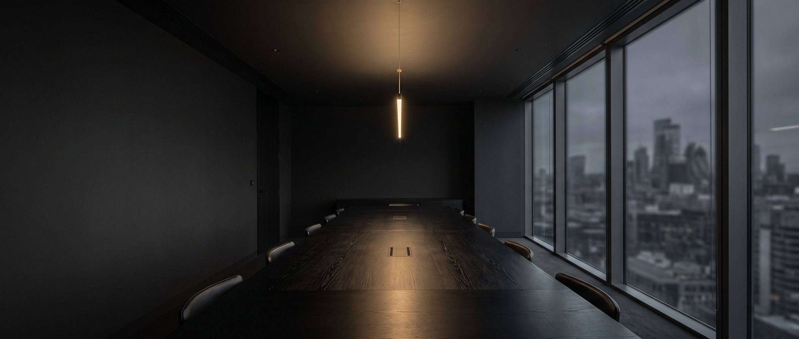
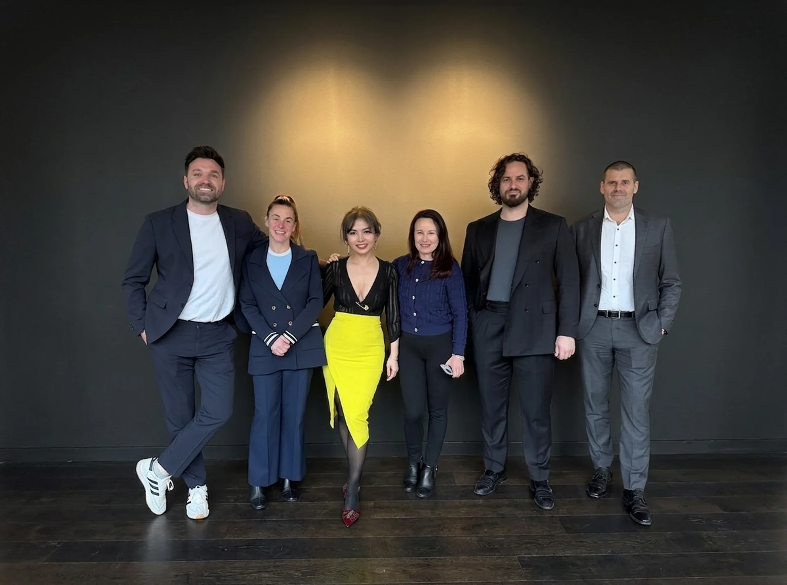

Marketing at one end. Ownership at the other.
OMD International is the operating group of Blue Ocean Business Trust. We grow businesses with marketing and software, sharpen them with coaching and consulting, and where the fit is right, we buy in.
An operating group, not an advisory one.
OMD International does the work rather than recommending it. We run the campaigns, build the software and sit in the leadership meetings, and we are still there when the results come in.
Blue Ocean Business Trust stands behind us, which is what lets us put capital into a business as well as effort. The trust holds the money. We do the work.
The order we work in is deliberate. Marketing shows us whether the demand is real. Software shows us whether the operation can carry it. Coaching and consulting show us whether the team can lead it.
So by the time equity comes up, we are not reading a pitch deck. We already know the business from the inside, because we helped build that side of it.

Five ways in, ordered by depth.
Depth of involvement, lightest first
-
Digital marketing
Search, paid media, content and conversion for businesses that need qualified enquiries rather than impressions. Our roots are in healthcare, where the standard of proof is higher and the regulator is watching.
Demand -
AI & custom apps
Software and applied AI built around the way a business already runs. Booking, intake, reporting, automation and the internal tools nobody sells off the shelf. We build them to be handed over, not rented back.
Systems -
Agency coaching
For agency owners: pricing, positioning, delivery and hiring, taught by people who are still running one. We coach the operator through the decision in front of them, not the theory behind it.
Capability -
Business consulting
Board-level work on strategy, structure and the numbers underneath them. We take a position rather than presenting options, and we stay long enough to be accountable for it.
Direction -
Private equity
Where the business and the fit are right, we invest and take a seat at the table. Patient capital held in a trust, so there is no fund clock forcing an exit before the business is ready for one.
Ownership
Small, senior, and on the account.

The people in the first conversation are the people on the work. We have kept the group deliberately small so that stays true.
Between them they have built agencies, sold them, run clinical marketing under regulation, shipped software, and sat on the buying side of a deal. That range is the point: it is what lets one group move a business from a first campaign to a shareholding without handing it to somebody else.
- United Kingdom London
- Ireland Dublin
- Scotland Edinburgh
- European Union Remote
Tell us where the business is stuck.
Whether the answer turns out to be a campaign, a system, a strategy or a shareholder, the first conversation is the same one. It costs nothing and usually takes half an hour.